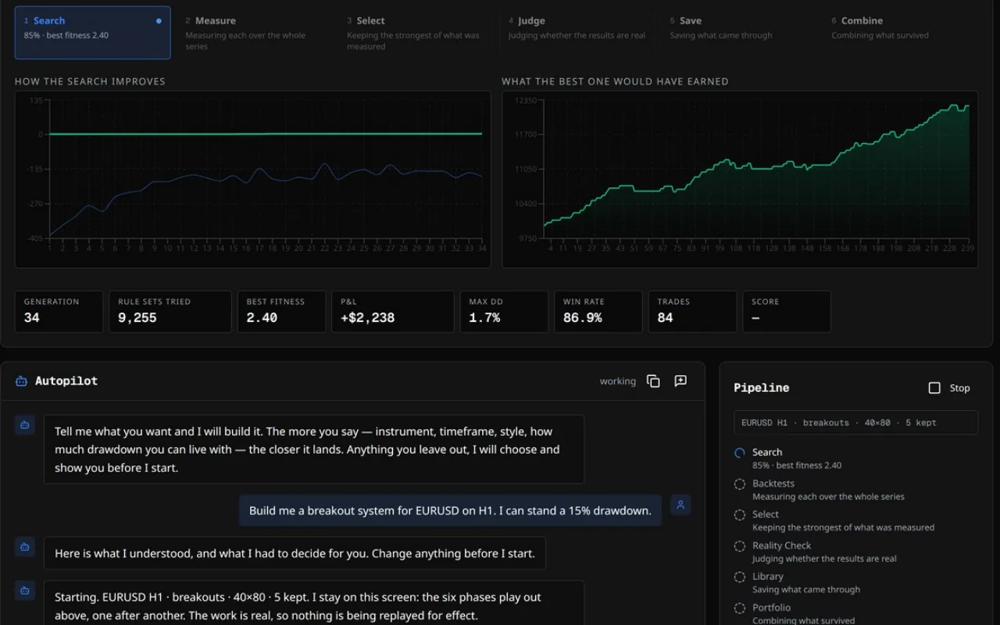
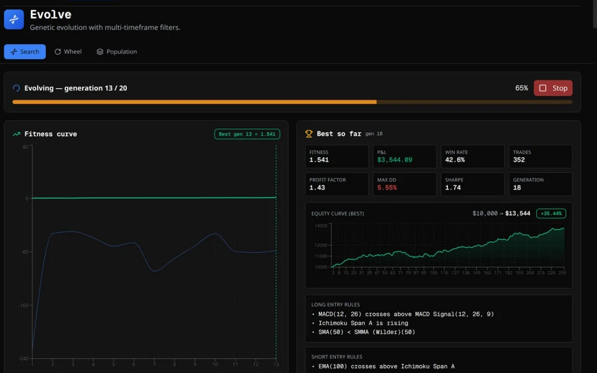
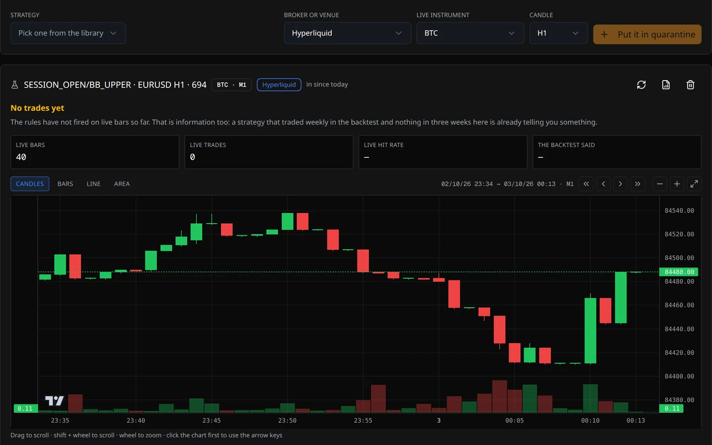
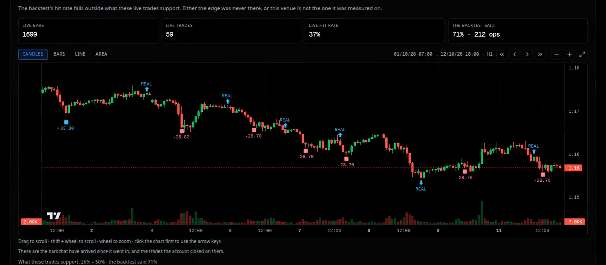
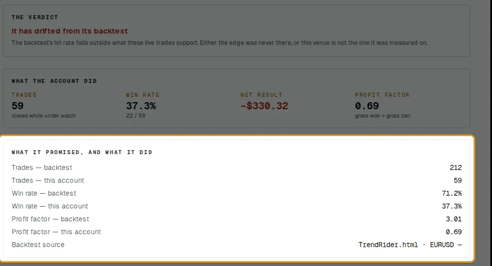
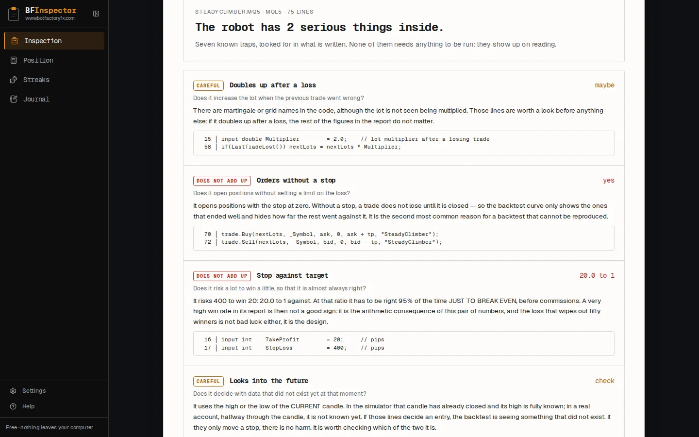
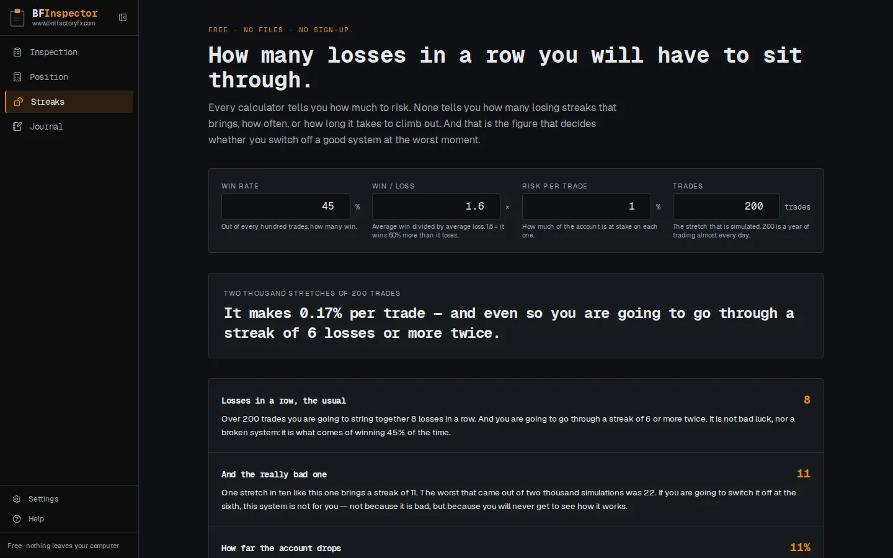

Todo backtest sale bonito
Casi literalmente. Una búsqueda que prueba miles de combinaciones de reglas sobre el mismo histórico y se queda con la mejor siempre encuentra algo con la curva subiendo, porque entre miles de variantes alguna encaja con el pasado por casualidad. Cuanto más pruebas, mejor parece la ganadora, y menos significa.
El fundador de BotFactoryFX lleva años usando StrategyQuant X a diario. Ha hecho estrategias que pasan Monte Carlo y una docena de pruebas de robustez más, y seguía sin un robot que le diera dinero. Los generadores de estrategias son muy buenos generando. Lo que necesitas antes de arriesgar dinero es un veredicto: ¿este resultado es real, o es la más afortunada de mil tiradas de moneda? Así que construimos primero el juez, y los programas a su alrededor.
Un motor, tres trabajos
Los tres programas comparten el mismo motor de medida, así que un número significa lo mismo en cualquiera de ellos. Los tres corren en tu ordenador, sin cuenta y sin nube.
| Programa | Cuándo | Qué hace | Precio |
|---|---|---|---|
| BFInspector | Antes de comprar un robot | Lee su código y el backtest que te enseñaron, busca las trampas conocidas y rehace sus operaciones con tu dinero. Para quien opera a mano: el tamaño de la posición, las rachas de pérdidas y un diario de operaciones. | Gratis |
| BFQuarantine | Después de comprarlo | Pone las operaciones que de verdad cerró, en la cuenta donde opera, frente al backtest con que te lo vendieron. Nunca ejecuta el robot ni manda una orden. | 199 USD, una vez |
| BotFactoryFX | Para construir y juzgar las tuyas | Búsqueda genética, el Reality Check, cuarentena sobre velas en vivo, carteras, tus robots en vivo, un asistente con IA y código nativo para seis plataformas. | 999 USD, una vez |
BotFactoryFX: genera miles, quédate con las que aguantan
BotFactoryFX es un laboratorio de trading algorítmico. Construye estrategias por miles y luego dedica casi todo su esfuerzo a intentar demostrar que cada una no vale nada. Lo que sobrevive sale escrito en código que puedes poner en tu plataforma. El menú sigue el orden del trabajo: datos, construir, juzgar, biblioteca, cuarentena, cartera, en vivo.

Primero, los datos. El histórico llega del CSV de tu bróker, de Dukascopy (1.615 instrumentos), de Binance (más de 500 pares), de MetaTrader 5, de JForex o de un monedero web3. Cada serie se audita antes de usarla, porque unos datos malos producen estrategias muy convincentes. Dos de las cosas que encontramos así: el feed gratuito de Dukascopy se inventa velas para el fin de semana cerrado, y el histórico EURUSD H1 de un bróker traía dentro de su vela de medianoche el máximo o el mínimo del día, cosa que una búsqueda explota enseguida.
La búsqueda. La búsqueda genética, Evolve, prueba miles de combinaciones de reglas en cada pasada, en siete familias: tendencia, ruptura, reversión, acción del precio, impulso, volatilidad y divergencia, y las mezcla cuando sale a cuenta. También puedes escribir las reglas a mano, o describir una idea con palabras y dejar que el asistente la escriba con los indicadores del propio programa. El piloto puede probar el procedimiento mismo: repite la búsqueda entera en cinco ventanas del histórico y opera lo que encontró cada una en el tramo que vino después.

El Reality Check
Es el centro del programa. El juez no pregunta si una estrategia ganó dinero. Pregunta si el resultado es real. Hace trece comprobaciones, nueve sobre el último tramo del histórico, el que la búsqueda no vio: fuera de muestra, mejor que el azar, walk-forward, sensibilidad a los parámetros, Monte Carlo, otros instrumentos, otras temporalidades, tamaño de la muestra, consistencia por periodos, perturbación, resolución de vela, tolerancia al coste y drawdown.
Dos cosas lo hacen algo más que una lista. Sabe cuánto buscó la búsqueda: la mejor de 9.000 combinaciones tiene que demostrar más que una estrategia escrita a mano, así que el juez sube el listón con el tamaño del torneo, y con lo que apunta la propia búsqueda calcula el Sharpe deflactado (Bailey y López de Prado, 2014) y la probabilidad de sobreajuste del backtest (Bailey, Borwein, López de Prado y Zhu, 2014). Hasta el nombre tiene historia: Halbert White llamó «a reality check» a su prueba contra el data snooping en 2000. Y se calibró con ruido: le dimos miles de estrategias ajustadas a caminos de precios al azar, que no tienen ventaja por construcción, y contamos cuántas aprobaba.
Por eso sus cuatro veredictos, Solid, Fragile, Weak y Not credible, significan algo: medimos cada cuánto se los gana el ruido.

Un caso real de nuestra portada. Una frase al piloto; 9.963 combinaciones probadas; cinco estrategias guardadas, la mejor ganando el 77 % de sus operaciones en el backtest. Su factor de beneficio fue 1,68 en el histórico sobre el que se hizo y 1,00 en el que nunca vio. El juez no dejó pasar ninguna de las cinco. Ése es su trabajo: el dinero que no pierdes en una cuenta de verdad.
Cuarentena, en vivo y exportar. Una estrategia que sobrevive al juez todavía tiene que sobrevivir al tiempo. La Cuarentena la pone a correr sobre las velas que llegan de tu cuenta, por MetaTrader 5 o JForex, o sin cuenta de Hyperliquid, Binance o Dukascopy, con órdenes simuladas, y compara lo que pasa con lo que prometía el backtest. No hay que dejar nada encendido: se pone al día al abrirla, y nunca manda una orden. Cuando una estrategia se lo ha ganado, BotFactoryFX la escribe en código nativo para MQL4, MQL5, Java para JForex, C# para cTrader, Pine Script y Python para Hyperliquid, compilado con el compilador de cada plataforma y con un corte de cuenta, un horario y el cierre del viernes dentro. Y En vivo lee tus robots en MetaTrader 5 y JForex y enseña cuánto se separa cada uno de su backtest.

Dr. Quant es el asistente de dentro. Funciona con tu propia clave de IA, de OpenAI o cualquier servicio compatible, Anthropic, Google Gemini u OpenRouter, o con un modelo en tu máquina, y cada respuesta dice lo que costó. Sabe cómo funciona el juez y qué dice la Ayuda, y te explica cualquier concepto que le preguntes. No opera ni toca tu biblioteca.
BFQuarantine: ¿sigue siendo el robot que compraste?
Compraste un robot, y su backtest decía un 71 % de operaciones ganadoras. BFQuarantine lee las operaciones que de verdad cerró en la cuenta donde opera, en MetaTrader 5, MetaTrader 4, JForex o un monedero web3, las pinta sobre las velas en que se hicieron y las pone frente al backtest con que te lo vendieron. Nunca ejecuta el código del robot ni manda una orden: su puente con la plataforma sólo lee.

Si lo que pasa en vivo cae fuera de lo que el backtest puede sostener, el veredicto lo dice: o la ventaja no existió nunca, o ese sitio no es donde se midió. Si sigue dentro, también lo dice, y añade que eso no prueba que funcione: sólo que no hay pruebas de que se haya roto. El informe está hecho para guardarlo.

BFInspector: antes de pagar
Alguien quiere venderte un robot cuyo backtest enseña un 93,7 % de operaciones ganadoras y un +32 % en un año. BFInspector lee tres ficheros: su código, el backtest que te enseñaron y tu propio histórico. Te escribe con palabras qué hace el robot, busca siete trampas conocidas en el código, desde doblar el lote después de perder hasta órdenes sin stop o reglas que leen la vela actual antes de que cierre, y hace seis comprobaciones al informe, como precios que nunca existieron o entradas demasiado buenas para ser casualidad.

Después rehace las operaciones del propio robot con tu capital, tu lote y tus costes, y otra vez con los costes de otros tipos de cuenta. Para quien opera a mano añade una calculadora de posición que redondea el lote siempre hacia abajo, un simulador de rachas que te dice cuántas pérdidas seguidas te va a hacer tragar tu plan, y un diario que da a tus operaciones el mismo informe que a un robot. Es gratis, no pide registro y nada sale de tu ordenador.

Cómo se hizo
El desarrollo empezó en agosto de 2026 con una prioridad: el juez antes que nada. Desde entonces se mantienen unas pocas reglas. Cada número de la pantalla sale del programa. Un mensaje al usuario es una afirmación sobre una causa, así que tiene que ser verdad. Y cuando una medida tumba una idea nuestra, lo decimos y cambiamos de rumbo. Algunos hitos, errores incluidos:
| Cuándo | Qué |
|---|---|
| Agosto de 2026 | Un programa de escritorio que corre en tu ordenador, con el Reality Check como columna vertebral en lugar de una caja de herramientas más barata. |
| 7 de septiembre | El juez recalibrado con ruido: de aprobar el 94 % de las estrategias ajustadas a ruido al 6 %. |
| 17 de septiembre | Empezamos a compilar cada exportación con el compilador de su plataforma y descubrimos que la de JForex no había compilado nunca. Desde entonces se comprueba así cada versión. |
| 18–20 de septiembre | Tres revisiones adversariales del juez y del motor. Entre otras cosas, una regla que leía una temporalidad más lenta podía ver esa vela antes de que cerrara. Arreglado. |
| 29 de septiembre | El Sharpe deflactado y la probabilidad de sobreajuste entran en el juez, y la auditoría de datos aprende a ver una vela que trae el futuro. |
| Octubre | La prueba del procedimiento; BFQuarantine y BFInspector como programas aparte; la calculadora y el diario de BFInspector; todos los programas en inglés y en castellano. |
Detrás hay unos 1.270 commits y más de 8.000 pruebas automáticas, que se pasan enteras antes de quedarse con cualquier cambio.
La herramienta tiene que funcionar primero en nuestras manos
Antes de venderlo nos pusimos una regla: no se lanza hasta que BotFactoryFX encuentre, en nuestras manos, una estrategia que su juez llame Solid. Así salieron nuestras búsquedas, con el procedimiento del piloto y el listón más exigente: Solid en el instrumento y otra vez Solid con su mercado hermano más parecido de sujeto:
| Mercado y su hermano | Búsquedas | Búsquedas con alguna que pasa las dos |
|---|---|---|
| S&P 500 con el Dow, diario | 30 | 3 |
| Bitcoin con Ethereum, diario y H4 | 600 | 0 |
| EURUSD con GBPUSD, diario y H4 | 100 | 0 |
| GBPUSD con EURUSD, diario y H4 | 100 | 0 |
| Oro con plata, diario y H4 | 100 | 0 |
| Apple con Microsoft, diario y H4 | 100 | 0 |
| ETF del Russell 2000 con el SPY, diario y H4 | 100 | 0 |
Esa tabla es el producto funcionando. Una herramienta que encontrara ventaja en todos los mercados estaría encontrando ruido. Una de las estrategias del S&P 500 está ahora en cuarentena, donde el tiempo la volverá a juzgar.
Un veredicto, no una caja de herramientas más grande
La herramienta más conocida de este terreno es StrategyQuant X, y es excelente. En su web aparecía a 1.290 USD (Starter) y 1.490 USD (Professional, la edición con sus pruebas de robustez), las dos con un año de actualizaciones y 300 USD al año después, y a 2.900 USD la Ultimate con actualizaciones de por vida. Tiene más piezas para construir y más plataformas a las que exportar que BotFactoryFX, y a algunos traders les hará falta justo eso. BotFactoryFX apuesta por otra cosa: en lugar de la caja de herramientas más grande, la respuesta más clara a una pregunta. 999 USD una vez, actualizaciones de por vida, sin suscripción, en hasta tres de tus máquinas; las trece comprobaciones incluidas; una frase al piloto; cuarentena sin arriesgar dinero; y puedes usar el programa en el navegador antes de pagar.
Lo que no hace
- No promete un robot rentable. Ningún programa puede. Lo que sí puede es decirte pronto cuáles no lo son, y vigilar el resto sin arriesgar dinero.
- El motor lleva una posición a la vez, así que los grids y las entradas apiladas quedan fuera.
- Tiene menos indicadores y menos plataformas de exportación que las herramientas más grandes: ni NinjaTrader ni TradeStation.
- Las versiones de Windows y macOS aún no van firmadas, así que tu sistema te pedirá confirmación la primera vez.
- De momento se paga en cripto, USDT o BTC.
La forma más rápida de juzgar todo esto es probarlo: empieza por BFInspector, que es gratis, o usa BotFactoryFX en el navegador antes de pagar.
De dónde salen los números
De los programas y de nuestras propias medidas: la recalibración del juez con ruido del 7 de septiembre de 2026; la pasada del piloto de nuestra portada; y las búsquedas del 13 al 16 de octubre de 2026, hechas con el procedimiento del piloto en nuestro propio banco de pruebas. Los precios de StrategyQuant X, tal como aparecían en su web el 2 de octubre de 2026. Las capturas de BFQuarantine y BFInspector usan ficheros de ejemplo inventados para ellas.